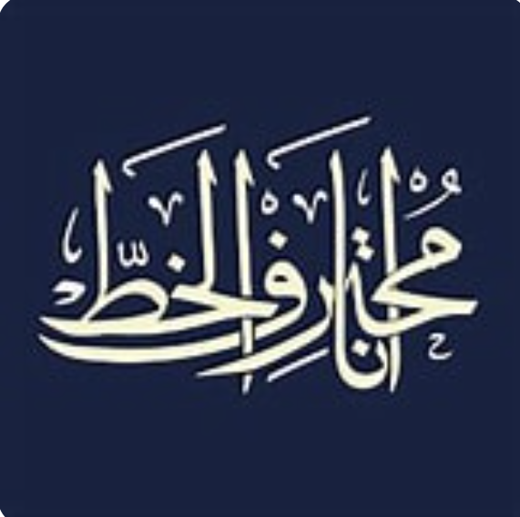

Elemen Kaligrafi Digital
أنا مختارف الخط
"Ana Mukhtarif Al-Khot" — Saya Ahli Kaligrafi. Karya kaligrafi digital ini menjadi elemen inspirasi visual dalam rancangan banner, menegaskan identitas artistik Islami pada desain.
Deskripsi Karya
Kaligrafi Digital yang Lahir dari Keimanan
Karya ini adalah kaligrafi digital Bismillahirrahmanirrahim — sebuah mahakarya tipografi Arab yang digarap secara digital menggunakan Adobe Photoshop. Setiap lekukan huruf dikerjakan dengan presisi, memadukan tradisi kaligrafi klasik Islam dengan sentuhan estetika digital modern.
"Setiap karya yang dimulai dengan Bismillah akan mendapat keberkahan. Maka saya tuangkan ia bukan hanya sebagai bacaan, tetapi sebagai sebuah karya seni yang layak dipandang dan direnungkan."
— MOCH Ahwan PahmulhaqKomposisi ini mempertemukan dua dunia: kubah masjid yang megah di sisi kiri sebagai simbol spiritualitas Islam, dan kaligrafi Bismillah mengalir yang mendominasi ruang gelap berlatar ornamen Islami — menciptakan harmoni antara arsitektur, seni, dan firman.
Breakdown Komposisi
Membaca Setiap Lapisan Karya Ini
-
01
Latar Gelap Ornamental — Kanvas Spiritual Background hitam pekat dengan motif ornamen Islami yang samar dipilih untuk menonjolkan kaligrafi tanpa distraksi. Kegelapan ini bukan kosong — ia adalah ruang kontemplasi, mengundang mata untuk fokus pada kalimat suci yang bercahaya.
-
02
Kaligrafi Bismillah — Focal Point Utama Tulisan بِسْمِ اللهِ الرَّحْمٰنِ الرَّحِيْمِ mengalir dengan gaya kaligrafi khas yang dinamis dan ekspresif — bukan sekadar tulisan, melainkan sebuah ekspresi seni. Setiap stroke dibentuk dengan kurva B-Spline yang halus mengikuti kaidah khat Arab tradisional.
-
03
Kubah Masjid — Simbol Keagungan Islam Di sisi kiri, kubah masjid berwarna hijau tosca dan emas berdiri megah dengan detail arsitektur yang kaya. Kubah ini bukan sekadar dekorasi — ia adalah penanda konteks: karya ini lahir dari tradisi dan peradaban Islam yang agung.
-
04
Teknik Layering Berlapis — Kedalaman Visual Karya ini dibangun dari 7 lapisan (layer) di Photoshop yang saling berinteraksi — setiap layer membawa perannya masing-masing: background, ornamen, kaligrafi, cahaya, dan elemen masjid. Teknik ini menghasilkan kedalaman dan dimensi yang tidak bisa dicapai dengan satu lapisan saja.
-
05
Palet Warna — Hitam, Emas & Tosca Tiga warna mendominasi: hitam sebagai kanvas kekhusyukan, emas sebagai simbol kemuliaan dan cahaya ilahi, serta tosca/hijau pada kubah yang merepresentasikan warna khas peradaban Islam. Ketiga warna ini membentuk identitas visual yang kuat dan harmonis.
Spesifikasi Teknis
Detail Produksi Karya
| Dimensi | 6000 × 3375px (rasio 16:9, resolusi cetak tinggi) |
| Latar Belakang | Hitam pekat dengan ornamen Islami samar |
| Warna Dominan | Hitam, Emas, Tosca/Hijau (kubah masjid) |
| Teknik Kaligrafi | B-Spline curve — digital calligraphy path |
| Jumlah Layer | 7 layer (Background, Layer 1–6) |
| Software | Adobe Photoshop |
| Format Export | PNG (kualitas penuh, transparansi terjaga) |